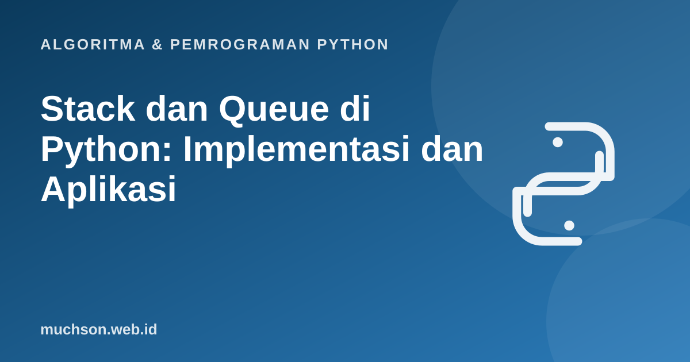

Beranda › Artikel › Algoritma & Pemrograman Python
Algoritma & Pemrograman PythonStack dan Queue di Python: Implementasi dan Aplikasi
Stack dan queue sederhana secara konsep, tetapi aplikasinya luas: kompiler memeriksa kurung dengan stack, sistem operasi menjadwalkan proses dengan queue, dan algoritma graf bergantung pada keduanya. Materi ini menjembatani konsep dengan implementasi dan menunjukkan masalah nyata yang diselesaikannya.
Sebaiknya sudah paham: list Python, kelas dasar, konsep stack dan queue

Setelah membaca dan mencoba materi ini, Anda mampu:
- mengimplementasikan stack dengan list dan queue dengan deque
- memakai stack untuk memeriksa kurung seimbang dan mengevaluasi ekspresi postfix
- memakai queue untuk simulasi antrean
- memakai priority queue dengan heapq
- memilih struktur yang tepat berdasarkan pola akses
Ulasan cepat
Implementasi dengan kelas
from collections import deque
class Stack:
def __init__(self):
self._data = []
def push(self, x): self._data.append(x) # O(1)
def pop(self):
if not self._data:
raise IndexError("stack kosong")
return self._data.pop() # O(1)
def peek(self): return self._data[-1]
def kosong(self): return not self._data
def __len__(self): return len(self._data)
class Queue:
def __init__(self):
self._data = deque()
def enqueue(self, x): self._data.append(x) # O(1)
def dequeue(self): return self._data.popleft() # O(1); list.pop(0) akan O(n)
def kosong(self): return not self._data
def __len__(self): return len(self._data)
s = Stack()
for x in "ABC": s.push(x)
print([s.pop() for _ in range(3)]) # ['C', 'B', 'A'] (LIFO)
q = Queue()
for x in "ABC": q.enqueue(x)
print([q.dequeue() for _ in range(3)]) # ['A', 'B', 'C'] (FIFO)['C', 'B', 'A']
['A', 'B', 'C']
Aplikasi 1: memeriksa kurung seimbang
Setiap kurung tutup harus berpasangan dengan kurung buka terakhir yang belum tertutup, itu persis perilaku stack.
def seimbang(teks):
pasangan = {")": "(", "]": "[", "}": "{"}
tumpuk = []
for ch in teks:
if ch in "([{":
tumpuk.append(ch)
elif ch in ")]}":
if not tumpuk or tumpuk.pop() != pasangan[ch]:
return False
return not tumpuk # harus kosong di akhir
for t in ["(a + b) * [c - d]", "((a + b)", "{[(])}", "", "(()())"]:
print(f"{t!r:22} -> {seimbang(t)}")'(a + b) * [c - d]' -> True
'((a + b)' -> False
'{[(])}' -> False
'' -> True
'(()())' -> True
Aplikasi 2: mengevaluasi ekspresi postfix
Notasi postfix (RPN) menaruh operator setelah operandnya, sehingga tidak perlu tanda kurung dan presedensi. Ekspresi (3 + 4) * 2 menjadi 3 4 + 2 *. Evaluasinya trivial dengan stack: angka di-push, operator mengambil dua angka teratas lalu mendorong hasilnya.
def hitung_postfix(ekspresi):
tumpuk = []
for token in ekspresi.split():
if token in "+-*/":
b, a = tumpuk.pop(), tumpuk.pop() # b diambil lebih dulu
tumpuk.append({"+": a + b, "-": a - b, "*": a * b, "/": a / b}[token])
else:
tumpuk.append(float(token))
return tumpuk.pop()
print(hitung_postfix("3 4 + 2 *")) # (3 + 4) * 2 = 14
print(hitung_postfix("5 1 2 + 4 * + 3 -")) # 5 + ((1 + 2) * 4) - 3 = 14
print(hitung_postfix("10 2 8 * + 3 -")) # 10 + 2 * 8 - 3 = 2314.0
14.0
23.0
Urutan pengambilan penting untuk operator yang tidak komutatif: pada 8 3 -, 3 di-pop lebih dulu (jadi b) dan 8 sebagai a, sehingga hasilnya 8 - 3 = 5, bukan -5.
Aplikasi 3: simulasi antrean
from collections import deque
pelanggan = deque([("Ani", 3), ("Budi", 2), ("Citra", 4)]) # (nama, lama layanan menit)
waktu = 0
while pelanggan:
nama, lama = pelanggan.popleft() # yang paling dulu datang dilayani lebih dulu
mulai = waktu
waktu += lama
print(f"{nama:<6} dilayani menit {mulai:>2}-{waktu:<2} (menunggu {mulai} menit)")Ani dilayani menit 0-3 (menunggu 0 menit)
Budi dilayani menit 3-5 (menunggu 3 menit)
Citra dilayani menit 5-9 (menunggu 5 menit)
Priority queue: yang terpenting keluar dulu
import heapq
igd = []
heapq.heappush(igd, (3, "Demam ringan")) # angka lebih kecil = lebih darurat
heapq.heappush(igd, (1, "Henti jantung"))
heapq.heappush(igd, (2, "Patah tulang"))
while igd:
prioritas, kasus = heapq.heappop(igd) # O(log n)
print(prioritas, kasus)1 Henti jantung
2 Patah tulang
3 Demam ringan
Memilih struktur
| Kebutuhan | Struktur | Python |
|---|---|---|
| Yang terakhir masuk keluar dulu (undo, rekursi, kurung) | Stack | list: append / pop |
| Yang pertama masuk keluar dulu (antrean, BFS) | Queue | collections.deque: append / popleft |
| Yang terpenting keluar dulu (penjadwalan, Dijkstra) | Priority queue | heapq |
| Ambil dari kedua ujung | Deque | collections.deque |
1. Ubah seimbang agar mengembalikan posisi kesalahan pertama, atau -1 bila seimbang.
2. Evaluasi manual postfix 4 5 + 2 3 * -.
3. Tulis fungsi yang membalik string memakai stack.
def balik(s):
t = list(s); hasil = ""
while t: hasil += t.pop()
return hasil4. Mengapa BFS memakai queue sedangkan DFS memakai stack?
- Stack (LIFO): list dengan append dan pop; queue (FIFO): deque dengan append dan popleft.
- Stack untuk kurung seimbang, postfix, undo, dan rekursi; queue untuk antrean dan BFS.
- Priority queue dengan heapq: operasi O(log n).
- Pilih deque, bukan list, untuk antrean besar.
Tanya jawab
Bagaimana mengubah infix menjadi postfix?
Apakah ada batas ukuran stack?
Apa bedanya queue.Queue dan collections.deque?
Referensi
- Dokumentasi Python: collections (deque)
- Dokumentasi Python: heapq, Heap queue algorithm
- Cormen, Leiserson, Rivest, Stein, Introduction to Algorithms (edisi ke-4, MIT Press, 2022)
- Robert Sedgewick dan Kevin Wayne, Algorithms (edisi ke-4), materi pendamping algs4.cs.princeton.edu